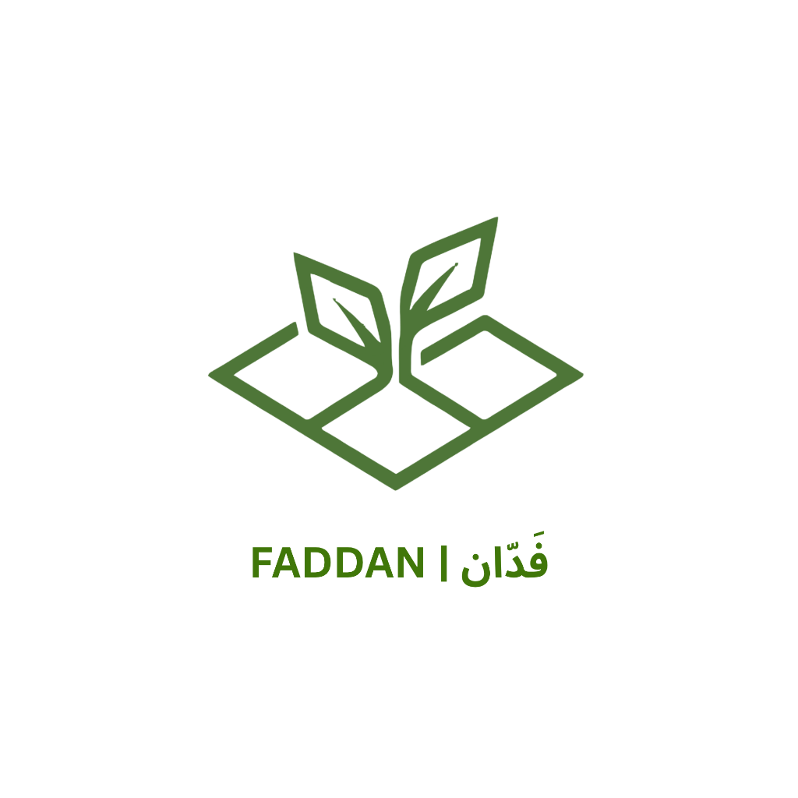

Spray only the sick leaves. Save 78.6% of your chemicals.
An autonomous greenhouse rover that identifies foliage disease via on-device edge vision and spot-sprays 12 mL micro-doses — 100% offline.

Precision spot-dosing beneath the foliage.
Watch Faddan in action: moving smoothly through commercial strawberry rows at 0.4 m/s, locking onto early-stage fungal pathology with sub-millimeter solenoid trigger timing.


Blanket spraying costs Egyptian farms three ways.
Uniform greenhouse misting treats healthy plants like sick ones — wasting expensive chemicals, risking export rejections, and relying on connectivity that doesn't exist.
15 Liters Dumped Every Cycle
Standard tractor misting douses all 12 rows regardless of infection. You pay for 15 L of expensive fungicide — yet over 78% lands on healthy foliage.
Residue Risk Blocks EU Export
Excess chemical residue triggers Pre-Harvest Interval (PHI) violations and fails GlobalG.A.P. audits, forfeiting European export quotas.
Zero Farm Internet Needed
Foreign tools assume 5G. In Ismailia and Beheira, connections drop instantly. Faddan operates 100% on local on-device hardware.
Three systems working in unison under the canopy.
Your Agronomist, Supercharged
Every detection arrives with a labeled snapshot, confidence score, and exact row-and-meter coordinate. Agronomists approve or correct each pinpoint from their phone — retraining edge models automatically.
Spot-Spray Down to a Single Leaf
Faddan doesn’t spray entire beds. It targets leaves. A 12 mL average micro-dose lands strictly on confirmed Botrytis, Powdery Mildew, or Spider Mite hotspots.
Harvest-Safe by Design
Rows within 3 days of harvest are automatically hardware-locked against spraying. PHI compliance isn't a post-harvest report — it is physically enforced by the machine.
Every leaf, mapped to the meter.
Row 4, 63.2m — that’s not an abstract data point, that’s one leaf. The dashboard shows each detection, each spray, and greenhouse microclimate on one screen.
What does 78.6% chemical savings mean for your farm?
Traditional misting consumes 15.0 L per cycle. Faddan delivers 3.2 L spot-doses. Adjust the sliders to see your projected season cash savings.
One machine. Four people breathe easier.
See EGP chemical savings, season yield projections, and export readiness on one single screen.
Verify AI diagnoses from your phone and turn every field correction into model retraining data.
Start, pause, and recall the rover with three big buttons — even while wearing thick field gloves.
Plan harvest around automatic PHI hardware locks and know every row is GlobalG.A.P. compliant.
Now Accepting 3 Commercial Greenhouses in Egypt
We bring the rover to your greenhouse in Ismailia, Sharqia, or Beheira for a live demonstration scan — zero obligation, zero internet required.
Frequently Asked Questions
See Faddan work your rows.
We’ll bring the rover to your greenhouse for a live demonstration scan — no obligation, no internet required.